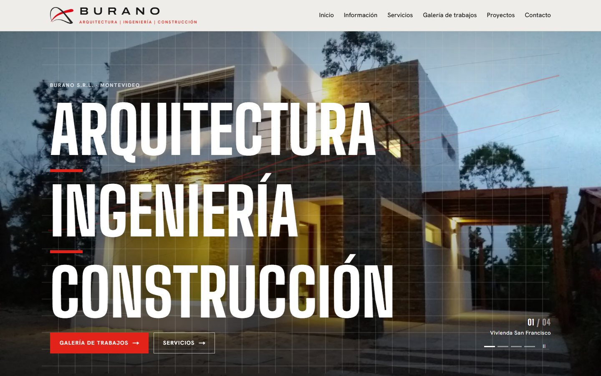
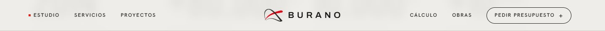
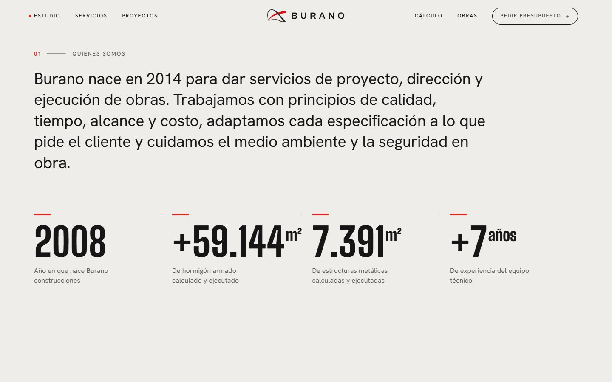
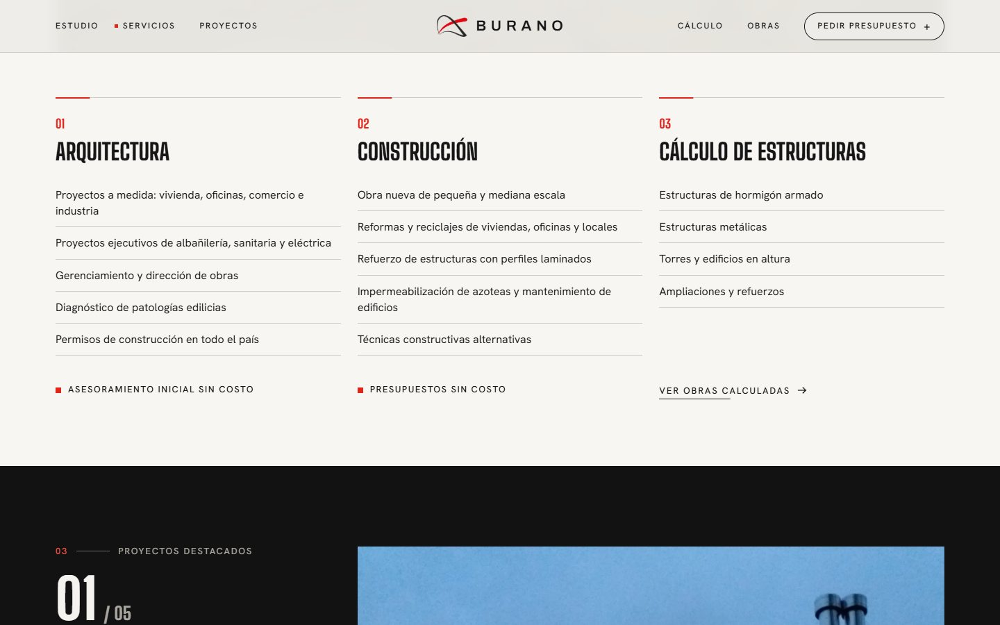
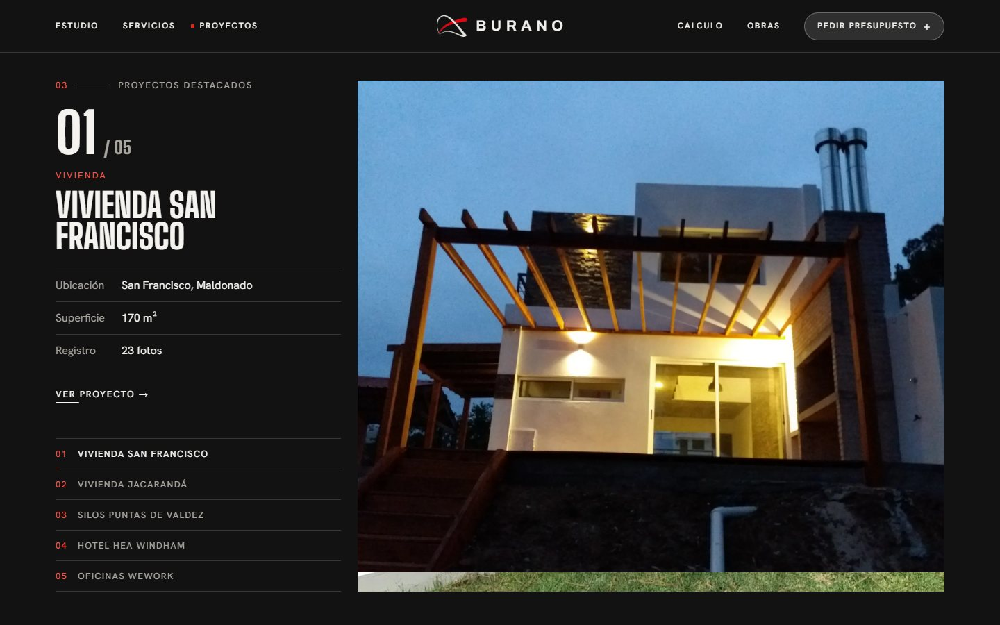
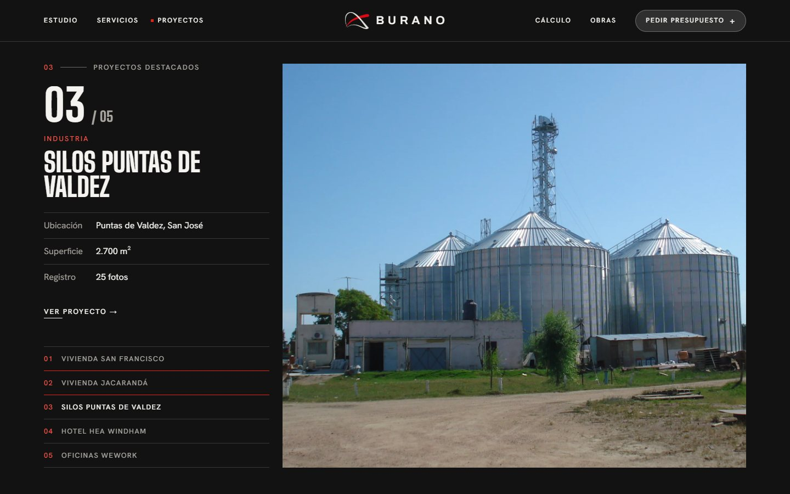
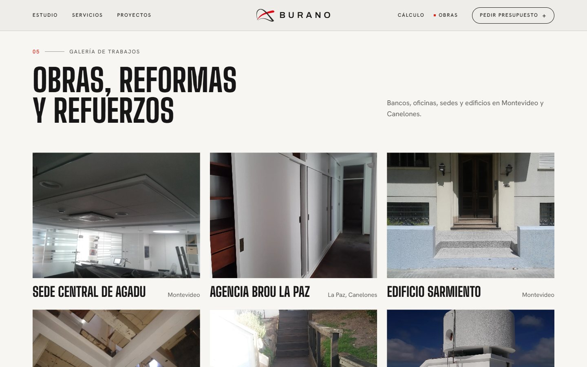
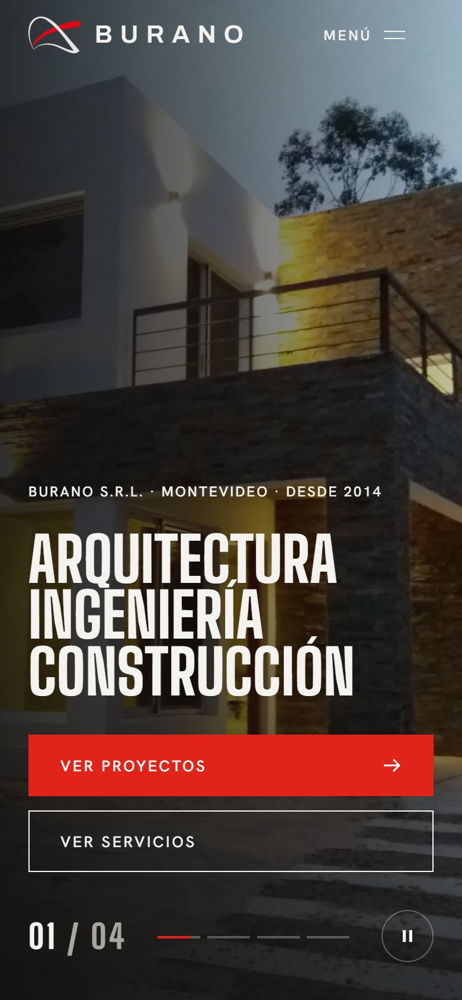
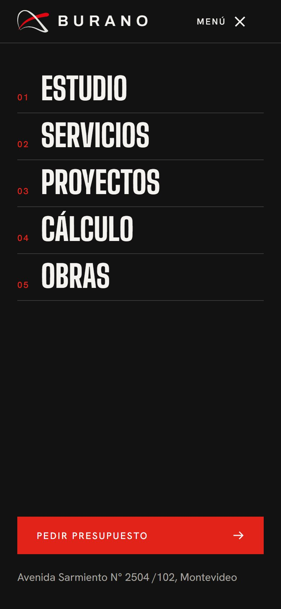
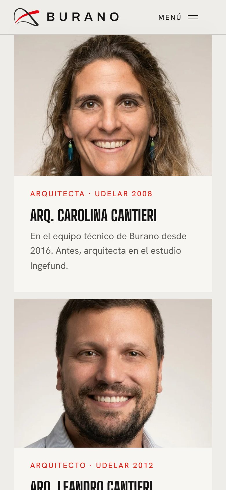

00Identidad que se mantiene
No cambia la marca. Se toman los mismos tokens del sitio actual: Big Shoulders Display en los títulos, Hanken Grotesk en los textos, Archivo en el logo, esquinas rectas y el rojo Burano como único acento.
#E2231A#161616#121212#EEEDEA#F7F6F3#FF524701Hero
CorregidoSe quitaron los guiones rojos. El titular entra línea por línea al cargar, y las 4 portadas cambian cada 6 segundos con un contador y un botón de pausa.


02Navbar estilo Yodezeen
Lleva links a la izquierda, la marca al centro y, a la derecha, links y un botón píldora. Es transparente sobre el hero y toma fondo claro u oscuro según la sección. Cada link baja con scroll suave a su ancla y un punto rojo marca la sección actual. En el celular hay un menú a pantalla completa.
CorregidoHover de "Pedir presupuesto"
Antes, el texto pasaba a rojo sobre el fondo rojo y desaparecía. Ahora el fondo pasa a rojo y el texto a blanco.


03Quiénes somos y números crecientes
El párrafo se va oscureciendo palabra por palabra a medida que se lee. Las cuatro cifras suben desde cero al entrar en pantalla.


CorregidoFotos del equipo
Se sumaron los retratos de Carolina, Leandro y Marcelo Cantieri, tomados del sitio actual. Al pasar el mouse, la foto hace un zoom leve.

04Servicios
Arquitectura, Construcción y Cálculo de estructuras quedan en tres columnas con los ítems del sitio actual. La foto se descubre al entrar en pantalla y la línea roja se completa al pasar el mouse.

05Proyectos: scrollshow
La sección queda fija mientras se scrollea, y la foto del siguiente proyecto tapa a la anterior de abajo hacia arriba. El texto nunca va sobre la foto: la ficha (número, categoría, nombre, ubicación, m² y fotos) tiene su propia columna, y un índice permite saltar a cualquier proyecto.



06Cálculo de estructuras y obras
Las torres y edificios calculados, que antes estaban en una página aparte, ahora aparecen como lista con los m² creciendo y una barra roja proporcional a cada obra. Debajo, la galería de trabajos con zoom suave al pasar el mouse.


07Contacto
CorregidoSe muestra la dirección completa: Avenida Sarmiento N° 2504 /102, Montevideo. La misión entra palabra por palabra, al lado del formulario de presupuesto.

PendienteEl correo del prototipo es contacto@burano.example. Hay que reemplazarlo por el real antes de publicar.
08Responsive
En el celular todo pasa a una columna y los botones ocupan el ancho completo. El scrollshow sigue funcionando: foto arriba, ficha abajo y barra de progreso. Si el dispositivo tiene activado "reducir movimiento", las animaciones pasan a fundidos suaves.




Prompts para aplicar al sitio original
Un prompt por cambio, independiente de los demás: se pueden saltear los que no se aprueben. Están pensados para pegarse en Claude Code dentro del repositorio del sitio actual (Next.js). Todos piden mantener las tipografías, los colores y los textos existentes.